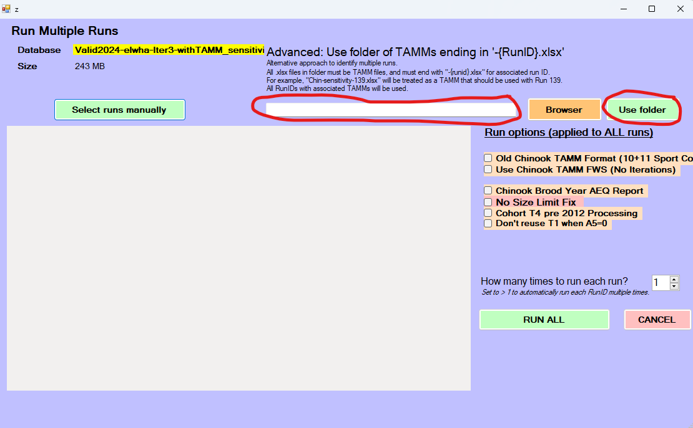
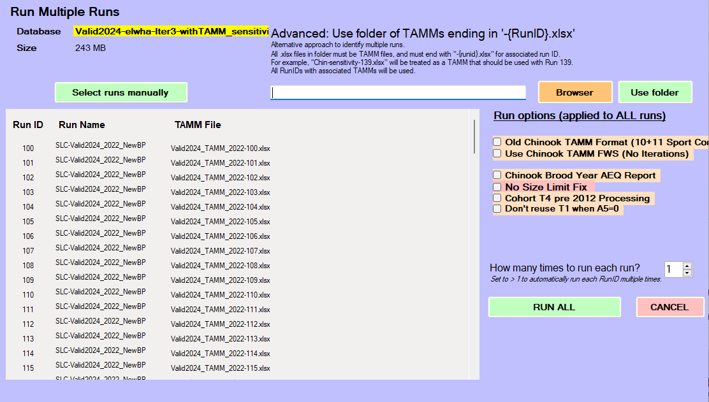

We recently developed a fork for FRAM that allows batch running of
FRAM runs (https://github.com/FRAMverse/FRAM_automation). This can
facilitate sensitivity analyses, where we explore the consequences to
fishery mortalities or ERs of changes in some key input or inputs of
interest. Here we provide a tutorial for recently added functionality to
framrsquared that can be used to generate runs for
sensitivity analyses which can then be batch-run in this new FRAM
fork.
Overview
I begin by describing the fundamental framework underlying the sensitivity anlaysis functions, then walk through those functions themselves, and end with an example of using these functions to run a sensitivity analysis on Elwha for our new OOB work.
Philosophy and functions
Match/Replace dataframe approach
Fundamentally, any sort of changes to the FRAM database – including for a sensitivity analyses – need to identify
- What should be changed, and
- What new values should be used
- requires both identify the table (e.g. maybe the StockRecruit table), the columns to change (e.g., maybe RecruitScaleFactor), and rows to change (maybe all rows with StockID 17 or 18, or all rows with Age 2, or some mixing and maxing of conditions).
The philosophy I took in writing the modify_table() and
sensitivity_*() functions was to identify both (1) and (2)
in a systematic, flexible way. All sensitivity analyses functions rely
on modify_table() under the hood; even though it is
unlikely that we will use modify_table() directly, it is
important to understand the structure of its input.
modify_table() answers both (1) and (2) above using a
“match/replace” dataframe. Each column name must start with a prefix of
“match_” or “replace_”, and the rest of the column name should be the
name of a column in the FRAM database column (with exact match of
capitalization). Any column label that starts with “match_” will be used
to identify rows to change, and any column label that starts with
“replace_” provides values that should be used. This is somewhat
analogous to a join() framework, in that we have “match by”
columns (in a join, we would use these for the by =
argument), and other columns that are not used for match. The primary
difference from a join framework is that rather than adding new columns
to a dataframe, we are replacing values in place.
As an example, if we were asked to look at the consequences of changing the size limits for fishery
For example, if we wanted to change the size limits for Chinook in Area 7 sport (Fishery ID 36). Currently those are 520 for each time step, but let’s imagine the request was to see what happens if we increased the size limit to 600 in timestep 1, left the size limit at 520 in timestep 2, and decreased the size limit to 450 in timestep 3. Timestep 4 should match timestep 1, so should also be 600. Let’s say we’re supposed to test the effects on the last three years’ final preseason runs, which have run ids 28, 29, and 30. For reference, the size limits are specified in the MinimumSize column of the SizeLimits table.
We could specify those changes with the following match/replace dataframe
## make the match/replace dataframe for a single run
mr_df = data.frame(match_FisheryID = c(36, 36, 36),
match_TimeStep = c(1,3,4),
replace_MinimumSize = c(600, 450, 600)
)Before worrying about the run ids, our match/replace dataframe looks like this:
mr_df## match_FisheryID match_TimeStep replace_MinimumSize
## 1 36 1 600
## 2 36 3 450
## 3 36 4 600If we used this as it is, as in
modify_table(fram_db, "SizeLimits", mr_df),
modify_table() would find all entries with fishery 36
timestep 1 or 4 and replace the MinimumSize with 600. Similarly, i
twould find all entries with fishery 36 timestep 3 and replace the
MinimumSize with 450. We can constrain these changes to run ids 28
through 30 by adding a match_RunID column
mr_df = tidyr::expand_grid(match_RunID = 28:30, mr_df)
mr_df## # A tibble: 9 × 4
## match_RunID match_FisheryID match_TimeStep replace_MinimumSize
## <int> <dbl> <dbl> <dbl>
## 1 28 36 1 600
## 2 28 36 3 450
## 3 28 36 4 600
## 4 29 36 1 600
## 5 29 36 3 450
## 6 29 36 4 600
## 7 30 36 1 600
## 8 30 36 3 450
## 9 30 36 4 600This framework allows us to specify any number of changes (to a single table), with any kind of simple matching criterion. Further, it’s easy to review the changes specified, and the changes can easily be saved to a csv or excel file for later review.
Scaling
We may not always want to specify our new values in absolute terms,
especially if we’re looking at the joint effects of changing several
values. The calc_from_scaling() allows the specification of
changes relative to current values, and returns the
corresponding match/replace table. For example, this allows us to
implement scenarios like “What if catch in these ten fisheries were 50%
of what we thought it was? What if it was 150% of what we thought it
was?. calc_from_scaling() takes the scenario using modified
version of the match/replace dataframe (with prefix”scale_” instead of
“replace_”), and runs the calculations to find what the actual
replacement values should be, then returns a match/replace dataframe
that can be fed into modify_table(). This is the framework
behind sensitivity_scaled().
sensitivity_*() functions
As of writing, there are three functions designed to generate sensitivity analyses
-
sensitivity_exact()takes a sequence of exact values to be used in the sensitivity analyses. Useful for cases when we, for example, want to look at what happens if a recruit scaler varies between 0.1 and 10. -
sensitivity_scaled()takes a sequence of scaling values. Useful if we want to look at concurrent changes for subsets of stocks or fisheries in a way that is consistent with an existing run; e.g. “what would have happened last year if all coastal stocks were 10%, 20%, …, 200% of the values used in the post-season run? -
sensitivity_custom()takes a list of match/replace dataframes. This is harder to use, but supports more complex changes like those needed to explore how changes in age composition affect ERs. I would recommend writing additional functions to programmatically generate those lists.
Each of these functions starts with a template run in the FRAM database, makes as many copies as necessary of that template run, makes changes to each run so that they represent the spectrum of values needed for the sensitivity analysis, and optionally copies a TAMM run into a directory with appropriate naming so that the folder can be used to load the runs and tamms into the FRAM multirun fork. By default these functions also save the changes made and associated run ids into a log file in the same directory as the FRAM database.
Common sensitivity functions
sensitivity_exact() and
sensitivity_scaled() have similar arguments, most of them
exactly the same. For simplicity, I will not describe them all here;
instead, see their respective help pages. Each of these only allows
specification a single new value (either an exact value or a scaling
factor) for each sensitivity run, although it can be applied to multiple
columns and rows of a table. For example, it is possible to use
sensitivity_exact() to have the recruit scalers of a dozen
stocks be 0.1 in the first run, 0.2 in the second run, 0.3 in the third
run, etc. For something in which multiple values need to be changed but
not in concert, use sensitivity_custom(). (For complex
scenarios in which multiple values should be changing differently from
one another but proportionally to some starting ratio, it may be
possible to do so by first modifying the values of the template run to
the desired ratio and then using sensitivity_scaled()).
When designing a sensitivity analysis, we need to first decide:
- what is our starting run? This determines
template_run. - What do we want to be changing across these runs? This determines
table_nameandmatch_df. - What sequence of values do we want to look at? This determines
scale_valuesorexact_values. Several notes here. First, because we provide a vector of values, we can choose to a linear scale (e.g.,seq(0.1, 2, by = 0.1)), OR we can choose a more complex scale like a log scale(e.g.,exp(seq(log(10), log(100000), length = 50))). Second, the length of the sequence of values we provide determines how many runs are generated. In general it looks like we need to keep the number of runs in FRAM access databases to no more than 500, so bear that in mind when making sensitivity analyses. If there is a need for many more runs in a single database, consider updating the FRAM fork to fold in the SQLite support Ty wrote, and then modify these functions to work with SQLite as well. - Do we want to use TAMMs with our sensitivity runs? If so, what TAMM file do we want to be our template? Where do we want the sensitivity run TAMMs to be saved? Using TAMM runs will slow the actual sensitivity analyses run in FRAM, but are necessary to do things like account for coastal iterations (Coho) or do a bunch of important things (Chinook).
Handling complicated things
sensitivity_custom() allows the specification of
arbitrary scenarios for each sensitivity run; the only constraint is
that (currently) only one table can be changed for each sensitivity run.
If, in the future, we end up with frequent changes that must be
simultaneously specified across multiple tables, it may be useful to
change sensitivity_custom to optionally take a more complex
structure. Effectively we would want a list of lists for
scenario_list, but it would be safest if the “inner” list
(multiple match/replace tables to be applied to a single run) were
written as some kind of custom class / object-type so that there is less
space for mistakes.
We may sometimes want our sensitivity analysis to look at the effects
of changing the TAMM rather than values directly in FRAM. While there is
no direct method to do so, we can use sensitivity_scaled()
as a quick way to create a series of identical runs and associated TAMMs
by providing scale_values = rep(1, nrun) where
nrun is the number of desired runs. We can then write code
to programmatically change the values in each TAMM. If this is a
frequent occurrence, we might write functions here or in {TAMMsupport}
to handle the TAMM modifications.
Example
As part of the Elwha Out of Base (OOB) work in 2025, I wanted to look at how changes to the Elwha starting abundances affect ERs across the board. I started by making a copy of the Elwa OOB “valid run” database to ensure I had no way of accidentally screwing up the reference database.
With the new database ready for modification, I decided:
- That I would use the latest postseason run as my starting point. This had run ID 62 in the database.
- That I would use TAMMs for each run. I found the TAMM corresponding to the latest postseason run, which happened to be in the main folder of the working directory, titled “Valid2024_TAMM_2022.xlsx”. I decided my sensitivity analysis TAMMs should live in the folder “elwha-scaling-sensitivity”.
- That I would vary abundance relative to the template run rather than assigning StockRecruit numbers based on exact values. Using relative values is convenient when we want to change multiple values at once. In this case, I wanted to vary the stock recruit scalers for every age class.
Using framrosetta, I found that Elwha is part of FRAM stocks 35 and 36 (unmarked and marked stocks). Looking at the StockRecruit table, I found that I wanted I wanted the changes to be applied to all rows in which StockID was 35 or 36, and I needed the changes to be made to column “RecruitScaleFactor”. I decided to also have the proportional changes be applied to “RecruitCohortSize” so that they remained aligned with the scale factors. This choice is not important for the use of framrsquared, and instead is addressing a funky quirk of FRAM itself.
(FRAM only uses RecruitScaleFactor, while RecruitCohortSize is present as any reference point (otherwise to get that number by multiplying the base cohort size by the RecruitScaleFactor term). However, at present FRAM only calculates RecruitCohortSize when making changes to the recruit scalers in the FRAM interface, so if we make changes to the RecruitScaleFactor values directly in the database, RecruitCohortSize will continue to show old values, making it meaningless. This isn’t a huge deal since it doesn’t get used anywhere, but it can be misleading to anyone looking at the database, so it’s good practice to try to keep them aligned.)
I decided I want to look at abundances from 5% of the template run to 2,000% (e.g., x0.05 through x20 abundances). I could do this on a linear scale, but it seemed more important to have more sensitivity runs in the 5%-100% range, somewhat fewer in the 100%-1000% range, and fewer still in the 1000%-2000% range. We could achieve something similar by sampling evenly on a log scale, but it’s easy enough to just space our samples on piecewise linear scales:
With all that in mind, creating the sensitivity analyses required very little work.
library(here)
library(framrsquared)
fram_db <- connect_fram_db(here("Valid2024-elwha-Iter3-withTAMM_sensitivity.mdb"))
fram_db |>
sensitivity_scaled(template_run = 62,
table_name = "StockRecruit",
match_df = data.frame(StockID = c(35, 36)),
scale_values = scale_terms,
cols_to_vary = c("RecruitScaleFactor", "RecruitCohortSize"),
tamm_template = here("post-season-withOOB/Valid2024_TAMM_2022.xlsx"),
tamm_target_folder = here("elwha-scaling-sensitivity"),
label = "elwha-sensitivity")
disconnect_fram_db(fram_db)That is all that is necessary to create 132 sensitivity analyses runs that are ready to run with the FRAM fork. We can even automate loading them in by opening a file explorer window and navigating to the folder with the tamm files (“elwha-scaling-sensitivity”) and copying the folder path into the “Advanced:..” field and clicking “Use folder”

At this point, FRAM will be ready to hit the Run All button:

The key pieces in the code call above that may not be intuitive:
-
match_dfis a dataframe with named columns that match the names of columns in the FRAM database. Here we only have one column, but if we wanted our changes to only apply to some age classes, for example, we would need a second column called “Age” that had the age classes we wanted to change. -
cols_to_varyis a vector of character strings that identify the columns of the table that should be varied.